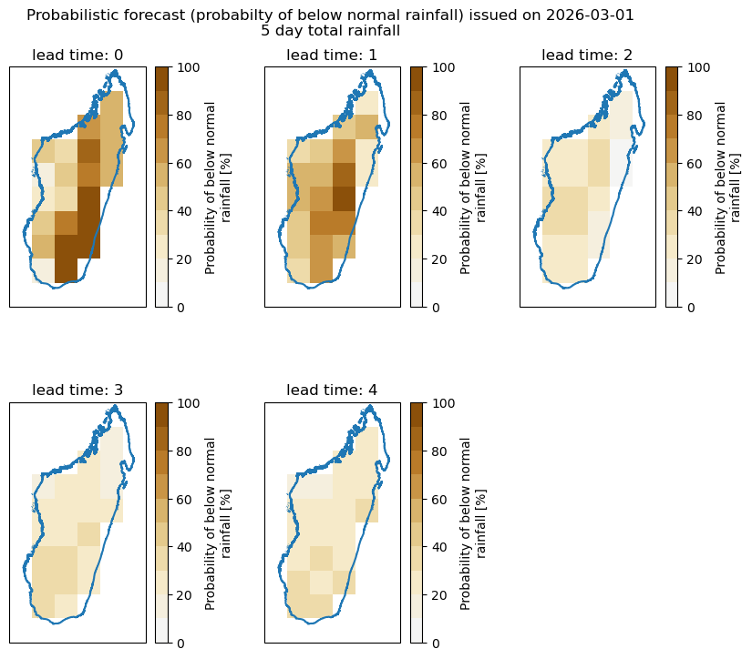
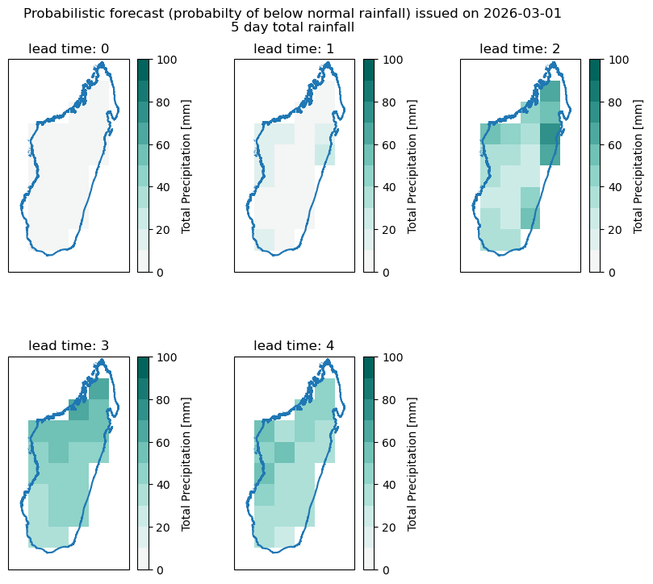
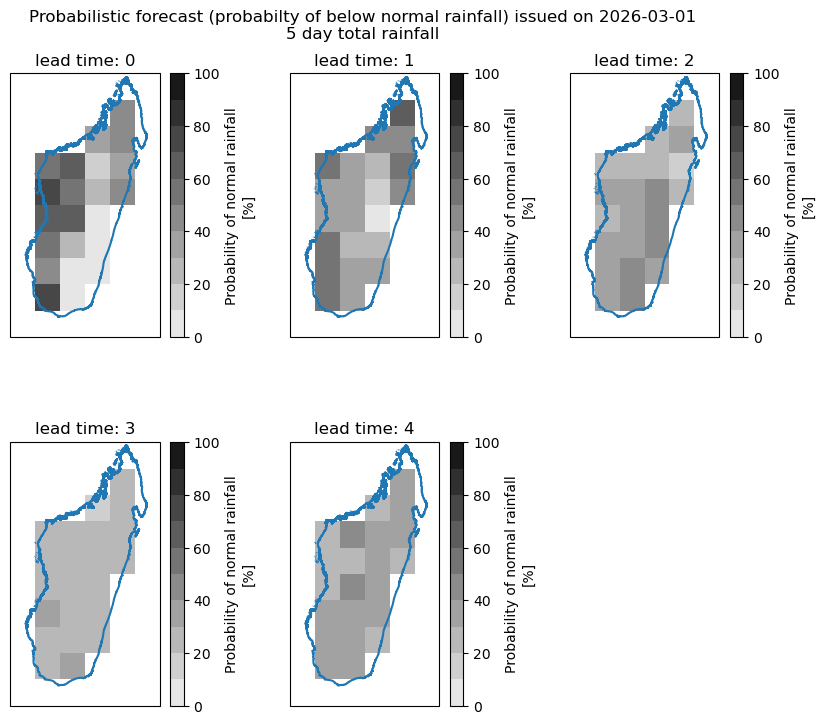
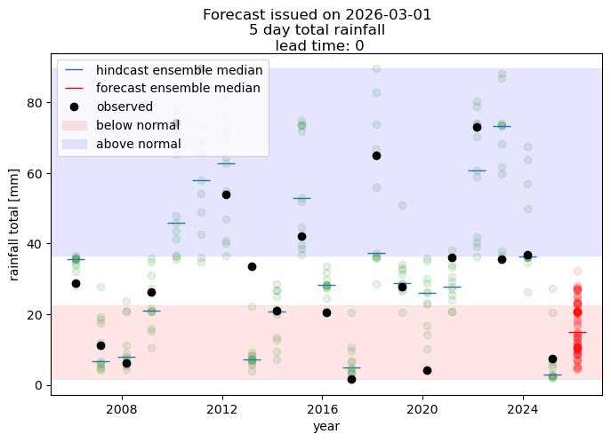
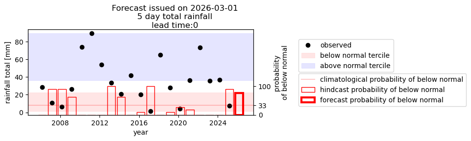

Probabilistic forecast example¶
OverviewWe will illustrate here how to generate a probabilistic forecast based on alredy downloaded forecast and hindcast data.¶
The process involves the following:
using postprocessing function to restructure downloaded forecast data into the lead time-oriented structure
bias-correcting hindcast and forecast
processing the bias-corrected data “by hand” to generate probabilistic forecast that includes:
calculating quantiles of observations for set thresholds - in the example we will use standard terciles - below, normal and above with thresholds of 0.33 and 0.66.
calculating empirical probabilities of each of the terciles by counting the number of members of the ensemble falling into each tercile category
plotting resulting forecast maps - probabilities of each of the terciles
plotting time series of tercile probabilities in the hindcast
#loading libraries
import xarray as xr
from matplotlib import pyplot as plt
import numpy as np
import pandas as pd
import geopandas as gpd
import cartopy.crs as ccrs
from acacia_s2s_toolkit.postprocess import postprocess_forecast, get_example_data
from acacia_s2s_toolkit.bias_correction import biascorrection_simple_qqmapping
import matplotlib.colors as colors
Getting some data to work with¶
#this is the data directory - you can change it as it suits you
data_dir="./data"
# this will load example data used in this notebook
# data are available at https://web.csag.uct.ac.za:~wolski/acacia/toolkit/
# comment this line if you want to work with your own data -
# you will then have to define a file with observational data, and have
# forecast and hindcast data for given initialization date downloaded to
# the data_dir
get_example_data(data_dir)
file already exists locally ./data/PRCPTOT_day_CHC_CHIRPS-2.0-0p25_merged.nc
file already exists locally ./data/tp_ECMWF_20260301_madagascar_hc.nc
file already exists locally ./data/tp_ECMWF_20260301_madagascar_fc.nc
file already exists locally ./data/madagascar.geojson
True
Defining parameters for postprocessing¶
# defining what you want to process - i.e. forecast date, domain and observed dataset
# nominal forecast date is defined here.
# This notebook uses example data for this date only
# example data are downloaded by a function get_example_data() called above
nominal_date="2026-03-01"
#target domain
target_domain="madagascar"
#forecast variable
fcst_var="tp"
#foreast model
fcst_model="ECMWF"
#this is file with observational data. It is gridded and covers the period of Jan 1981-March 2026
obs_file=f"{data_dir}/PRCPTOT_day_CHC_CHIRPS-2.0-0p25_merged.nc"
#we have to provide the name of the variable stored in the obs_file
obs_var="PRCPTOT"
# this is a file with vector data showing the boundaries of the domain - will be used in plotting only
domain_shape_file=f"{data_dir}/madagascar.geojson"
# data will be aggregated into blocks of this size - "5D" is a Pandas expression of temporal base and stands for 5 days
# if you want differently sized blocks - just change it into, say "7D"
agg_window="5D"
#and this defines how data will be aggreagated over the block - in this case it will be a sum of daily values
agg_method="sum"
# this defines regridding parameters for matching the obs and forecast grids.
# it assumes obs grid is finer, so fine_to_coarse will give forecast grid, coarse_to_fine will give obs grid
# raise_if_missing will stop processing if the spatial overlap between obs and forecast grids of less than fractional
# threshold
grid_alignment_kwargs=dict(
direction="fine_to_coarse",
method="conservative",
raise_if_missing=True,
threshold=0.9
)
# this defines time alignment parameter for matching the obs and hindcast time series.
# raise_if_missing will stop processing if any of the hindcast days are not covered by observations
time_alignment_kwargs={"raise_if_missing":True}
postprocessing forecast and hindcast¶
# calling the preprocessing wrapper
hindcast_lt,forecast_lt,obs_lt=postprocess_forecast(
nominal_date=nominal_date,
download_dir=data_dir,
target_domain=target_domain,
fcst_var=fcst_var,
fcst_model=fcst_model,
agg_window=agg_window,
agg_method=agg_method,
obs_file=obs_file,
obs_var=obs_var,
grid_alignment_kwargs=grid_alignment_kwargs,
time_alignment_kwargs=time_alignment_kwargs,
verbose=False
)
logging is False
nominal forecast date: 2026-03-01
download dir: ./data
domain: madagascar
model: ECMWF
forecast variable: tp
aggregation window: 5D
observed file: ./data/PRCPTOT_day_CHC_CHIRPS-2.0-0p25_merged.nc
observed variable: PRCPTOT
postprocessing done
Applying bias correction¶
#We will use q-q mapping bias correction
forecast_bc,hindcast_bc=biascorrection_simple_qqmapping(forecast_lt, hindcast_lt, obs_lt)
# making sure units are right - this should be implemented within the postprocessing function, but isn't at the time, so this is an ugly makeshift fix
forecast_bc.attrs["units"]="mm"
hindcast_bc.attrs["units"]="mm"
Deriving probabilistic forecast¶
#deriving quantiles of distribution of observations
#calculating quantiles across initialization dates
obs_below=obs_lt.quantile(0.33, "init_date")
obs_above=obs_lt.quantile(0.66, "init_date")
#calculating percent of ensemble members falling into terciles
# in hindcast
# for above
hindcast_above=(hindcast_bc>obs_above).sum("member")/(~np.isnan(hindcast_bc)).sum("member")*100
#we need to change the units and name in array attributes
hindcast_above.attrs["units"]="%"
hindcast_above.attrs["long_name"]="Probability of above normal rainfall"
#for below
hindcast_below=(hindcast_bc<obs_below).sum("member")/(~np.isnan(hindcast_bc)).sum("member")*100
#we need to change the units and name in array attributes
hindcast_below.attrs["units"]="%"
hindcast_below.attrs["long_name"]="Probability of below normal rainfall"
#for normal
hindcast_normal=100-(hindcast_above+hindcast_below)
#we need to change the units and name in array attributes
hindcast_below.attrs["units"]="%"
hindcast_below.attrs["long_name"]="Probability of normal rainfall"
# now in forecast
# for above
forecast_above=(forecast_bc>obs_above).sum("member")/(~np.isnan(forecast_bc)).sum("member")*100
#we need to change the units and name in array attributes
forecast_below.attrs["units"]="%"
forecast_below.attrs["long_name"]="Probability of above normal rainfall"
#for below
forecast_below=(forecast_bc<obs_below).sum("member")/(~np.isnan(forecast_bc)).sum("member")*100
#we need to change the units and name in array attributes
forecast_below.attrs["units"]="%"
forecast_below.attrs["long_name"]="Probability of below normal rainfall"
#for normal
forecast_normal=100-(forecast_above+forecast_below)
#we need to change the units and name in array attributes
forecast_normal.attrs["units"]="%"
forecast_normal.attrs["long_name"]="Probability of normal rainfall"
/home/piotr/miniforge3/envs/s2stoolkit_dev/lib/python3.13/site-packages/numpy/lib/_nanfunctions_impl.py:1593: RuntimeWarning: All-NaN slice encountered
return fnb._ureduce(a,
Plotting forecast maps¶
# probability for below normal
#reading overlay layer to add to plots
overlay=gpd.read_file(domain_shape_file)
fig=plt.figure(figsize=(10,8))
for lead_time in range(5):
pl=fig.add_subplot(2,3,lead_time+1, projection=ccrs.PlateCarree())
# we will be a bit more sophisticated with colormap here
vmin,vmax=0,100
levels = np.linspace(vmin,vmax,11)
cmap_rb = plt.get_cmap('BrBG_r')
cols = cmap_rb(np.linspace(0.5, 0.9, len(levels) - 1))
cmap=colors.ListedColormap(cols)
forecast_below.isel(lead_time=lead_time).plot(cmap=cmap, vmin=vmin, vmax=vmax)
#adding overlay
overlay.boundary.plot(ax=pl)
pl.set_title("lead time: {}".format(lead_time))
plt.subplots_adjust(hspace=0.4, wspace=0.3, top=0.9)
plt.suptitle("Probabilistic forecast (probabilty of below normal rainfall) issued on {}\n{} day total rainfall".format(nominal_date, agg_window[:-1]))
Text(0.5, 0.98, 'Probabilistic forecast (probabilty of below normal rainfall) issued on 2026-03-01\n5 day total rainfall')

# plotting for above normal
#reading overlay layer to add to plots
overlay=gpd.read_file(domain_shape_file)
#plotting probability of above
fig=plt.figure(figsize=(10,8))
for lead_time in range(5):
pl=fig.add_subplot(2,3,lead_time+1, projection=ccrs.PlateCarree())
# we will be a bit more sophisicated with the colormap here...
vmin,vmax=0,100
levels = np.linspace(vmin,vmax,11)
cmap_rb = plt.get_cmap('BrBG')
cols = cmap_rb(np.linspace(0.5, 0.9, len(levels) - 1))
cmap=colors.ListedColormap(cols)
forecast_above.isel(lead_time=lead_time).plot(cmap=cmap, vmin=vmin, vmax=vmax)
#adding overlay
overlay.boundary.plot(ax=pl)
pl.set_title("lead time: {}".format(lead_time))
plt.subplots_adjust(hspace=0.4, wspace=0.3, top=0.9)
plt.suptitle("Probabilistic forecast (probabilty of below normal rainfall) issued on {}\n{} day total rainfall".format(nominal_date, agg_window[:-1]))
Text(0.5, 0.98, 'Probabilistic forecast (probabilty of below normal rainfall) issued on 2026-03-01\n5 day total rainfall')

# plotting for above normal
#reading overlay layer to add to plots
overlay=gpd.read_file(domain_shape_file)
#plotting probability of above
fig=plt.figure(figsize=(10,8))
for lead_time in range(5):
pl=fig.add_subplot(2,3,lead_time+1, projection=ccrs.PlateCarree())
# we will be a bit more sophisicated with the colormap here...
vmin,vmax=0,100
levels = np.linspace(vmin,vmax,11)
cmap_rb = plt.get_cmap('grey_r')
cols = cmap_rb(np.linspace(0.1, 0.9, len(levels) - 1))
cmap=colors.ListedColormap(cols)
forecast_normal.isel(lead_time=lead_time).plot(cmap=cmap, vmin=vmin, vmax=vmax)
#adding overlay
overlay.boundary.plot(ax=pl)
pl.set_title("lead time: {}".format(lead_time))
plt.subplots_adjust(hspace=0.4, wspace=0.3, top=0.9)
plt.suptitle("Probabilistic forecast (probabilty of below normal rainfall) issued on {}\n{} day total rainfall".format(nominal_date, agg_window[:-1]))
Text(0.5, 0.98, 'Probabilistic forecast (probabilty of below normal rainfall) issued on 2026-03-01\n5 day total rainfall')

visualizing time series of forecast and hindcast¶
# time series can be visualized for a selected location or for average over a domain or a sub-region
# here we will use a location
lat,lon=-19,47.5
#we will plot it for a selected lead time
lead_time=0
# we use bias corrected forecast
hcst=hindcast_bc.sel(lead_time=lead_time, lat=lat, lon=lon, method="nearest")
fcst=forecast_bc.sel(lead_time=lead_time, lat=lat, lon=lon, method="nearest")
#and observations in the lead-time oriented format
obs=obs_lt.sel(lead_time=lead_time, lat=lat, lon=lon, method="nearest")
#now plotting
fig=plt.figure(figsize=(8,5))
pl=fig.add_subplot(1,1,1)
#plotting hincasts - individual members
for m in hcst.member:
pl.plot(hcst.init_date,hcst.sel(member=m), "o", color="green", alpha=0.1)
#and hindcast median
pl.plot(hcst.init_date, hcst.median("member"), "_", ms=15, label="hindcast ensemble median")
#plotting forecast - individual members
for m in fcst.member:
cont=True
pl.plot(fcst.init_date,fcst.sel(member=m), "o", color="red",alpha=0.1)
pl.plot(fcst.init_date,fcst.median("member"), "_", color="red", ms=15, label="forecast ensemble median")
#plotting observations
pl.plot(obs.init_date,obs, "o", color="black", label="observed")
#adding terciles
pl.axhspan(obs.quantile(0.0), obs.quantile(0.33), label="below normal", color="red", alpha=0.1, lw=0.5)
pl.axhspan(obs.quantile(0.66), obs.quantile(1), label="above normal", color="blue", alpha=0.1, lw=0.5)
plt.suptitle("Forecast issued on {}\n{} day total rainfall\n lead time: {}".format(nominal_date, agg_window[:-1], lead_time))
pl.set_xlabel("year")
pl.set_ylabel("rainfall total [mm]")
plt.legend()
plt.show()

a more sophisticated plot…¶
# time series can be visualized for a selected location or for average over a domain or a sub-region
# here we will use a location
lat,lon=-19,47.5
#we will plot it for a selected lead time
lead_time=0
# we use bias corrected forecast
hcst=hindcast_bc.sel(lead_time=lead_time, lat=lat, lon=lon, method="nearest")
fcst=forecast_bc.sel(lead_time=lead_time, lat=lat, lon=lon, method="nearest")
#and observations in the lead-time oriented format
obs=obs_lt.sel(lead_time=lead_time, lat=lat, lon=lon, method="nearest")
#now plotting
fig=plt.figure(figsize=(8,5))
pl=fig.add_subplot(2,1,1)
#plotting observations
pl.plot(obs.init_date,obs, "o", color="black", label="observed")
#adding terciles
pl.axhspan(obs.quantile(0.0), obs.quantile(0.33), label="below normal tercile", color="red", alpha=0.1, lw=0.5)
pl.axhspan(obs.quantile(0.66), obs.quantile(1), label="above normal tercile", color="blue", alpha=0.1, lw=0.5)
plt.legend(loc=(1.2,0.5))
pl2=pl.twinx()
pl2.bar(hindcast_below.init_date.values.astype("datetime64[D]"), hindcast_below.sel(lead_time=lead_time, lat=lat, lon=lon, method="nearest"), width=300, facecolor="none", edgecolor="red", linewidth=1, label="hindcast probability of below normal")
pl2.set_ylim(0,300)
pl2.set_yticks([0,33,100])
pl2.axhline(33, color="red", alpha=0.2, label="climatological probability of below normal")
pl2.set_ylabel("probability \nof below normal")
pl2.bar(forecast_below.init_date.values.astype("datetime64[D]"), forecast_below.sel(lead_time=lead_time, lat=lat, lon=lon, method="nearest"), width=300, facecolor="none", edgecolor="red", linewidth=3, label="forecast probability of below normal")
plt.suptitle("Forecast issued on {}\n{} day total rainfall\n lead time:{} ".format(nominal_date, agg_window[:-1], lead_time))
pl.set_xlabel("year")
pl.set_ylabel("rainfall total [mm]")
plt.legend(loc=(1.2,0.1))
fig.subplots_adjust(right=0.7)
plt.show()
